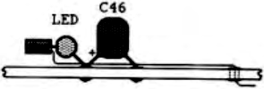

Scorpio News |
April–June 1987 – Volume 1. Issue 2. |
| Page 39 of 51 |
|---|
|

View from front |
View from above
This completes the modification. Depending on the type of LED used, you may need to adjust the value of the 330 ohm resistor, but try to keep the current below 8mA.
Re-install the card and switch on. The LED should be off. If you have a BIOS that supports a RAM-disk on the MAP RAM card (e.g. SYS) then boot it up and watch the results. If not then use the Monitor ROM to output values to port 0FEh.
| O FE 00 | ;LED off |
| O FE 80 | ;LED on |
| O FE 8x | ;LED on |
| O FE 00 | ;LED off |
The modification will work for both Nascom 2 and GM811 users. I have successfully used it for the past year with no problems at all. Unfortunately the modification is not suitable for GM813 users who are using the MAP RAM board in its memory mapping mode. Additional logic is needed to detect when the extended address lies outside the first 64K (0 – FFFFh) i.e when address lines A16-A19 are all zero.
| Page 39 of 51 |
|---|